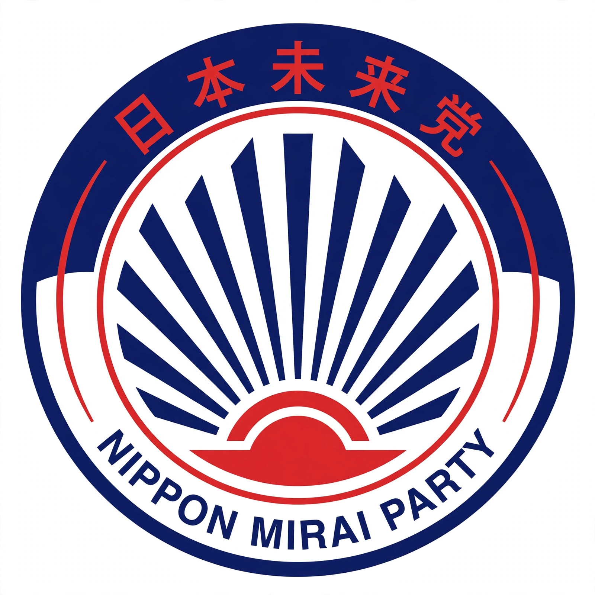

| Liberal Democratic Party | |
|---|---|
 | |
| Founded | 15 November 1955 |
| Headquarters | Nagatachō, Chiyoda, Tokyo |
| Ideology | Conservatism; Japanese nationalism; big-tent |
| Political position | Right-wing |
The Liberal Democratic Party (自由民主党, Jiyū-Minshutō), often abbreviated to LDP or Jimintō, is a conservative political party in Japan. It has been the dominant party in Japanese politics since its founding in 1955, governing almost continuously — with brief interruptions in 1993–1994 and 2009–2012 — and is a classic example of a predominant party system studied by political scientists such as Giovanni Sartori.
The LDP was formed in 1955 by the merger of the Liberal Party and the Japan Democratic Party, encouraged by business interests and the United States as a bulwark against socialism; the merger is known as the "conservative merger" (hoshu gōdō) and created the "1955 System" of LDP dominance over a perennial socialist opposition. Under leaders such as Hayato Ikeda and Eisaku Satō the party presided over Japan's high-growth era. Internal competition is organised through powerful factions (habatsu) that distribute cabinet posts and party offices.
The party lost power for the first time in 1993 after splits over political reform, returning in coalition in 1994. Under Junichiro Koizumi (2001–2006) it pursued structural reform and postal privatisation. It was again defeated in 2009 by the Democratic Party of Japan, but returned to power under Shinzo Abe in 2012; Abe became Japan's longest-serving prime minister before his assassination in 2022.
The LDP combines a mass membership and local support associations (kōenkai) with close ties to business, agriculture and the bureaucracy. Its policies have generally favoured export-led growth, the US–Japan alliance and incremental constitutional revision, while internal diversity ranges from nationalist conservatives to relative moderates.
Giovanni Sartori · African National Congress · People's Action Party · Two-party system